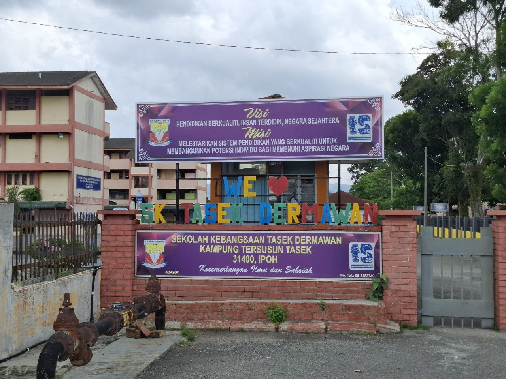
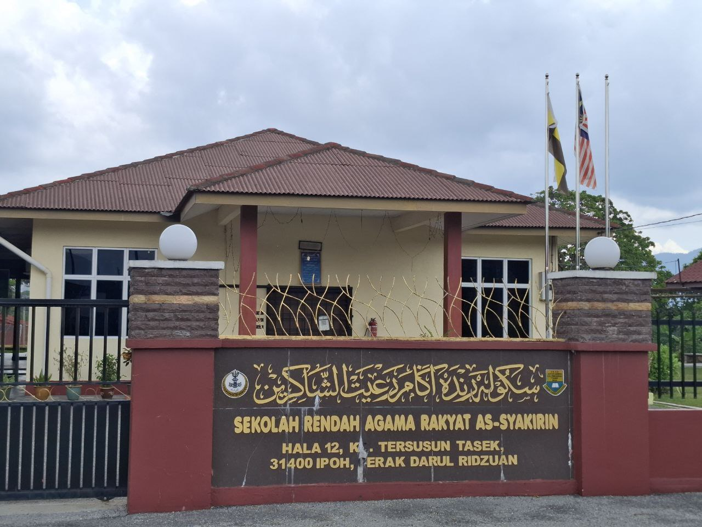
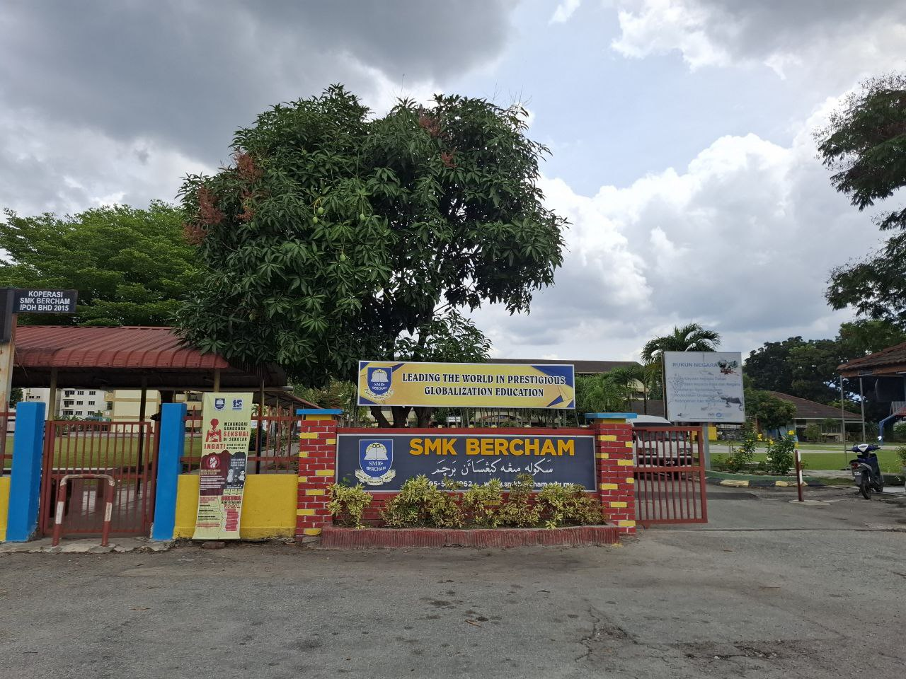

-
Sekolah Kebangsaan Tasek Dermawan (2011-2016)

When I was 7 years old, I was sent to Sekolah Kebangsaan Tasek Dermawan. Sekolah Kebangsaan Tasek Dermawan, is a national school located in Kampung Tersusun Tasek, Bercham. It is near my house. Every morning my father will send me and my siblings to the school. I took the UPSR at this school when I was in 6th grade.
-
Sekolah Rendah Agama Rakyat As-Syakirin (2012-2016)

When I was 8 years old, my parents enrolled me in Sekolah Rendah Agama Rakyat As-Syakirin. I got religious education in this school. In the morning (7 am - 1 pm) I go to national school, while in the afternoon (3 pm - 5 pm) I go to religious school. Among the subjects I studied at this school were Al-Quran, Sirah, Aqidah, Ibadah, Lughotul Arabiah, Adab and Jawi. Compared to the subjects in the national school, I am more proficient and perform in the subjects in the religious school. And because of that, I am very interested in all things related to religion. I took UPKK when I was in grade 5 and I took SRAI when I was in grade 6.
-
Sekolah Menengah Kebangsaan Bercham (2017-2021)

I continued my studies at my secondary school at Sekolah Menengah Kebangsaan Bercham when I was 13 years old. I took the PT3 exam when I was in Form 3. When I entered Form 4, I was selected to enter the Pure Science class. At first I wasn't interested because I didn't like science subjects. And according to the plan, I want to enter the Computer Science class, so I took the Computer Science subject as an additional subject. But after a few months, I feel that I can't afford to carry both. So I decided to drop the Computer Science subject and focus on the Pure Science subject. I am taking SPM during 2022 due to MCO.
-
UiTM Cawangan Kedah (2022-2025)

I continued my studies at UiTM Cawangan Kedah and took Diploma in Library Informatics. This course was my first choice in UPU after the update phase. This is because before, I placed religion-related courses in the first to seventh choices, but I was not qualified because I only had the Pendidikan Islam subject. So, on the recommendation of my school resource center teacher, I took a course related to the library since I have been holding the position of school resource center prefect for 5 years. During the 4 semesters studying this course, various skills I learned, for example, IT skills, softskills, library skills, and management skills. In addition, I also joined two associations which are Persatuan Ikatan Mahasiswa Dinamis (IMAN) and Persatuan Seni Silat Cekak Malaysia (PSSCM). So I got more skills by joining those associations. Moreover now I also hold an important position in both associations.